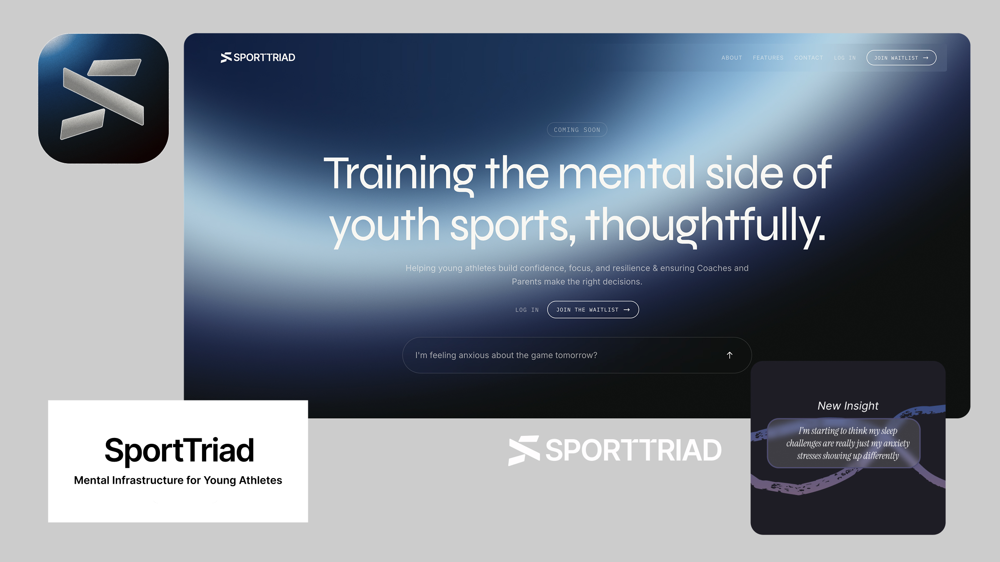

Sporttriad is the company behind Triad. As part of the founding team, I led product research to understand how young athletes, parents, and coaches actually talk about stress, confidence, and performance. This meant running interviews and lightweight discovery sessions, mapping out the emotional journey around games and training, and turning those narratives into specific opportunities for the product to help.
On the product design side, I owned the end-to-end UX for our first releases: onboarding, daily check-ins, insights, and coach dashboards. I worked from low-fidelity flows to detailed UI, creating a design system that balanced a calm, trustworthy aesthetic with clear affordances for logging feelings, reflecting on patterns, and taking action. Every interaction was designed to feel supportive rather than clinical, especially for younger athletes who might be opening up about difficult topics for the first time.

Beyond the UI, I helped define how Sporttriad ran experiments: what to ship first, how to measure whether a feature actually reduced friction or improved reflection habits, and how to keep the system technically simple while still supporting future AI-assisted experiences. Day to day, this looked like an ongoing loop between user research, product strategy, IA and interaction design, and hands-on implementation in collaboration with engineering.